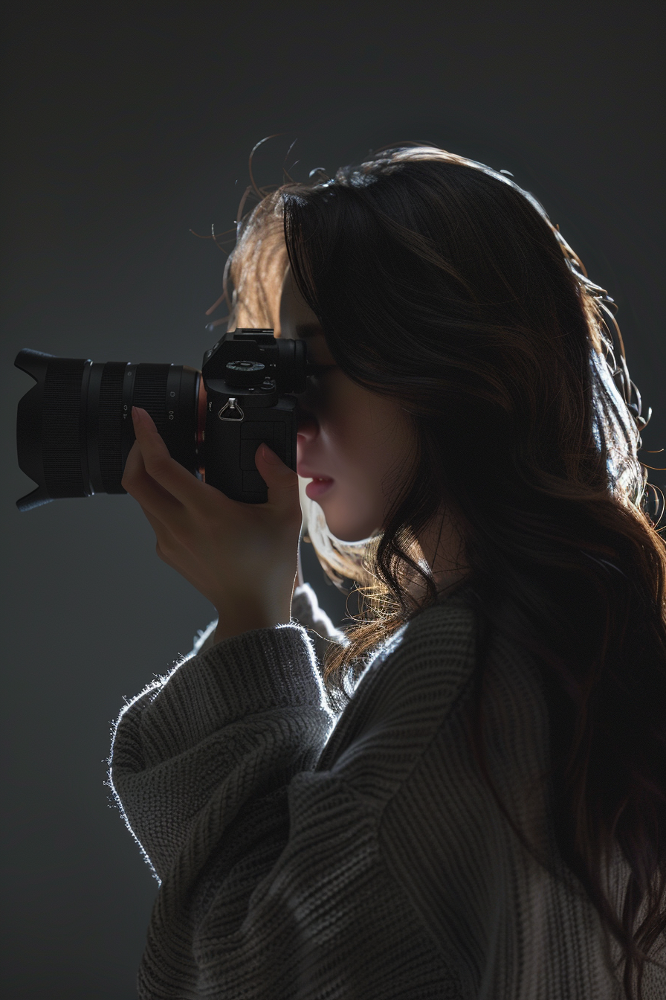
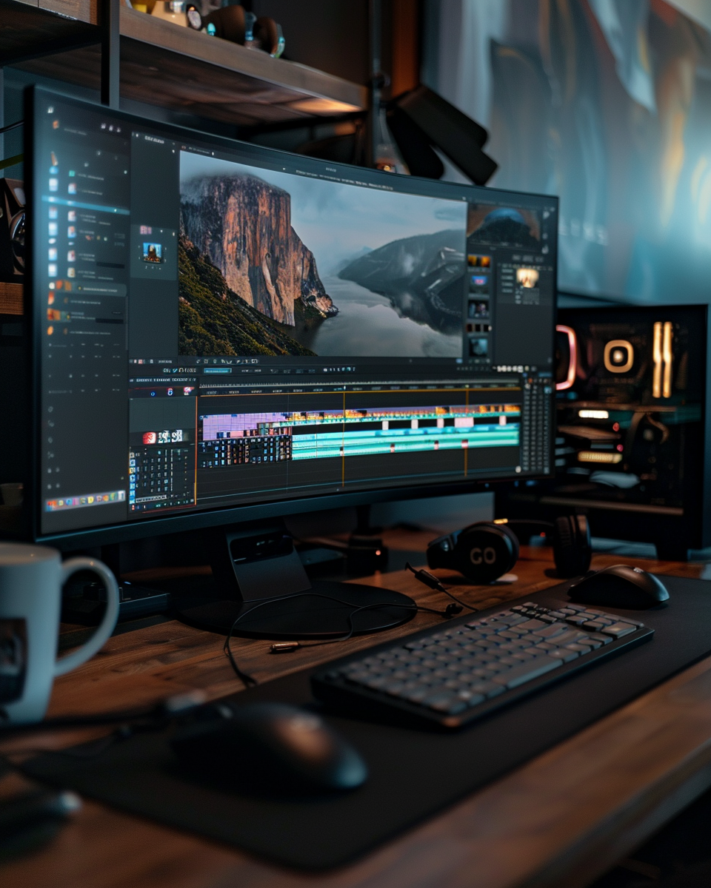

Content Planning & Production
기획, 촬영, 편집 등 콘텐츠 제작의 전체 과정에 대한 이해를 바탕으로, 단계별로 실무에 참여한 경험이 있습니다. 브랜드 콘셉트 도출, 이미지 및 영상 기획안 제작, 현장 촬영과 보정, 쇼츠 편집 등 각 파트에서 실질적인 작업을 수행해왔습니다.
📌 콘텐츠 기획
공간/브랜드 콘셉트를 시각화하고, 촬영 콘텐츠의 흐름을 기획할 수 있습니다.
📌 사진 촬영 및 보정
숙박/푸드/인물 등 다양한 카테고리의 촬영 경험이 있으며, 촬영 후 보정까지 작업합니다.
📌 영상 촬영 및 편집
간단한 쇼츠/릴스 콘텐츠 제작이 가능하며, 컷 편집 및 자막 삽입을 할 수 있습니다.
